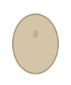

Para ver tu Tamagotchi necesitamos que inicies sesión con GitHub. Solo pedimos el alcance read:user (perfil público).
En ventanas tipo esta a veces no se abre el navegador solo. Usa el botón de abajo o copia el código.
Esperando que autorices…
Estado del gato, contador de supervivencia y commits de hoy (UTC).

Cargando…
Modo mock (?mock=1): datos ficticios. Normal: python main.py.